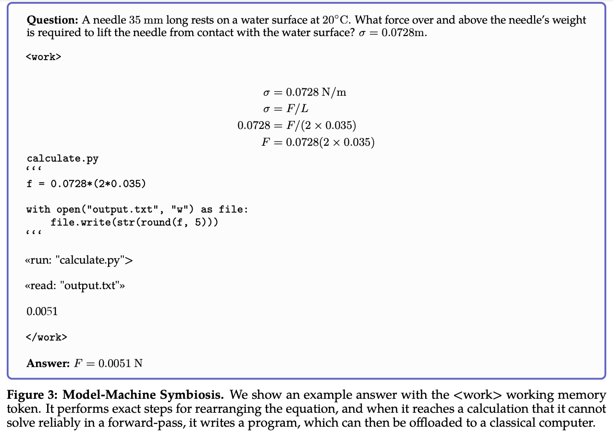

Galactica is a new large language model created by Papers with Code and Meta. It is trained on a corpus containing scientific papers, knowledge bases, code, etc.
This post is a quick overview of the model and aims at highlighting the threats and opportunities of such a large model for science.
Just another LLM?
Since the introduction of GPT-like models, both the NLP community and the general public have been fascinated by the power of these models. When GPT-3 was released in 2020, it was the first time that the general public got to see a large language model
in action. We have seen news articles, html pages, and even entire essays generated by GPT-3. The fluency of the generated text was impressive and it was clear that the model was able to fool the human eye.
Galactica does not differ much from GPT-3. It is a large language model that comes in different sizes. The largest model has 120 billion parameters and the smallest one has 125 million parameters. The model is, by design, a LLM for science,
which means that it is trained on a corpus containing scientific papers, knowledge bases, code, etc.
So, Galactica is just another LLM? Not really. Galactica is a science LLM and it is trained on a corpus containing scientific papers, knowledge bases, code, etc. This means that Galactica can generate text that sounds scientific. This is
a very important point because it means that Galactica can generate text that is not always factually correct, but it sounds authoritative and scientific.
Galactica
Galactica is an LLM created by Papers with Code and Meta. It shares most of the characteristics of GPT-3 or OPT models. However, some of the choices made during the
training of Galactica are quite interesting.
Dataset: Galactica is trained on a corpus containing 48 million scientific papers (83% of the total size of the corpus), 2 million code snippets, 8 million documents from reference material, 2 million entries from knowledge bases, and
other documents both from the web and from the scientific domain. Such a large corpus is a great starting point for a science LLM.
Working Memory Token, <work>: reporting directly from the paper
Transformer-based architectures lack an explicit working memory capability, which means a single-forward pass has limited efficacy.
In this case, the authors make explicit reference to the chain-of-thought prompting that is a technique used to enhance the performance of LLMs by providing it with the ability to generate step-by-step process to solve a problem. In
Galactica, the authors propose to encode this idea directly in the model by adding a specific token to the vocabulary <work>. This token is used to wrap text including the detailed steps to generate a result. This is a very
interesting idea and it is a great way to explicitly encode the idea of a working memory into the model.

Citation Token: one of the distinctive features of scientific papers is the presence of citations. In Galactica, the authors propose to encode this idea directly in the model by adding specific tokens to the vocabulary: [START_REF] and [END_REF]. These tokens are used to wrap text containing a citation. This allows the model to understand both when a citation is present and what is the content of the citation.
Prompt Pre-Training: another important difference with respect to other LLMs is the use of prompt pre-training. In addition to standard next word prediction training, Galactica is trained with prompts. The use of prompts during
training has been shown to improve the performance of LLMsSanh, Victor, et al. "Multitask prompted training enables zero-shot task generalization." - On arXiv.
Galactica is trained also using prompting during training to boost the performance on downstream tasks (e.g., question answering) and to augment the training data. The authors explicitly mention that the use of prompts during training
can be beneficial for the LLM but the set of prompts used during training is quite limited. This is a very interesting point because it means that the model can benefit from the use of prompts during training even in limited conditions. In
the future, it would be interesting to see how the performance of Galactica can be improved by using a larger set of prompts during training.
Other standard choices are made during the training of Galactica. For example, the authors use GeLU as activation function, a large 2048 token context window, and learned positional embeddings. The authors also use BPE as tokenization method and they
use a vocabulary of 50k tokens (!! important to note that the vocabulary is generated using a random sample of 2% of the corpus).
Results
The results of Galactica are quite impressive. The model is tested on a pletora of tasks and it performs very well. Does this mean that Galactica is a good model for science? The choice is yours. Let's wrap up the results with a few takeaways.
Multiple steps on the same examples during training: recent work has shown that multiple pre-training epochs on the same (huge!) dataset can be harmful for the performance of LLMs
Hernandez, Danny, et al. "Scaling Laws and Interpretability of Learning from Repeated Data." - On arXiv. In Galactica, the authors investigate this idea by training
the model for multiple epochs on the same dataset. The main difference with respect to previous work is that the authors use a curated dataset. The results are quite interesting. The model can improve its performance until the 4th epoch
and then it starts to degrade. This is a very interesting result because it means that the model can benefit from multiple epochs on the same dataset because (i) the dataset is curated or (ii) scientific domain contain dense information
(more value per token).
Latex equations: Galactica is evaluated on the task of generating latex equations. When prompted with a description of a formula, Galactica generates the corresponding latex code.
Do you imagine how useful this can be? Imagine that you are writing a paper and you need to include a formula. You can just write a description of the formula
and Galactica will generate the latex code for you. Sure, the generated latex code can be not correct 100% of the time, but it is a great starting point for your paper.
The model is compared with OPT
Zhang, Susan, et al. "Opt: Open pre-trained transformer language models." - On arXiv, BLOOM
Scao, Teven Le, et al. "BLOOM: A 176B-Parameter Open-Access Multilingual Language Model." - On arXiv,
and GPT-3Brown, Tom, et al. "Language models are few-shot learners." - On arXiv. It obtains the
best results on all domains. What is more interesting is that Galactica 30B is already able to outperform all competitors in most of the domains.
Reasoning: The <work> token is used to wrap text including the detailed steps to finally generate the result. When compared with other LLMs, Galactica is able to more accurately generate the result of a process.
Even in this case the model can outperform all competitors. Again, the Galactica 30B model is already able achieve very good performance considering the size of the model (tradeoff between size and performance). The introduction of the <work> token can significantly improve the performance of the model and it is a great way to explicitly encode the idea of a working memory into the model.
Scientific NLP: the model is evaluate on knowledge-intensive tasks from multiple domains and knowledge levels (e.g., high school, college, and graduate school).
A few interesting observations:
The authors report that the model may be biased towards graduate-level knowledge.
Considering in-domain performance, the model is able to outperform all competitors
Considering out-of-domain performance, the model shows good performance overall
The GPT-3 results are only available for a few tasks, why? I don't know. Even for other competitors the results are not available for all tasks.
Citations prediction: here is when the tasks become really interesting. The model is evaluated on the task of predicting the citation of a paper given the left-side context. The model is prompted with a text similar to the following
one:
FP-growth is a frequent pattern mining algorithm for transactional databases [START_REF]
The model is then asked to predict the citation of the paper in the following way:
FP-growth is a frequent pattern mining algorithm for transactional databases [START_REF]Mining frequent patterns without candidate generation, Han[END_REF]
The model is compared with sparse and dense retrieval models (!! those are the ones we use today for citation lookup). One of the possible criticism, in this case, is that the model can be biased towards the most cited papers. That can be true, but the authors report that the bias is mitigated by the size of the model. It means that the biggest model (e.g., 120B) is able to predict the correct citation even for papers having very few citation. The following image shows how
the predicted and the actual citation are distributed over the number of citations of the paper.
A lot of additional results are reported in the paper. They include biological understanding, drug discovery, chemical understanding and many more. I strongly encourage you to read the paper to learn more about the results.
Discussion (include personal opinions)
The paper proposes Galactica as a LLM for science. What are the threats to this claim? The authors advertise Galactica as a model that can be used to generate scientific papers and they provide a public demo to show the impressing
capabilities of the model. While the results of the model are very interesting, and, for sure the public release of the model is a great achievement, I think that the authors are a bit too optimistic about the capabilities of the model and managed
to create a hype around the model.
Factual correctness: generative models, expecially in the NLP domain, can generate very fluent text but they are not able to guarantee the factual correctness of the generated text. Galactica is not an exception. While the model
is better than many other LLMs (by design -- and by data!), it can not guarantee that the generated text is correct. The problem of hallucinated content is a very common problem in the NLP domain and the authors are aware of it. They are
not solving this problem and they are not claiming to solve it. They are just saying that Galactica is better than other LLMs in the scientific. I think that this is a very important point to consider.
Misinformation and fake news: the model can be used to generate fake information that really sounds like it is correct. The model is just amazing at "academicese" and it can generate long essays that sound like they are written by a real
scientist. Is that a problem? The choice is yours. I think that it is not. If the problem is that the model can generate fake information, then we should not use it in that way. Generating fake news is a problem, but it is not a problem of the
model. It is a problem of the people using the model. The model is just a tool. Let's stop one moment and discuss about this.
Academic companion: the best way to think about Galactica is as an academic companion. The model can help you to write a paper, but it must not write a paper for you. You are the researcher and you are the one that knows the domain,
the problem, the data, the methods, and so on. Non-native speakers can use the model to generate a first draft of a paper or to get suggestion on academic writing. Again, the model can help you to write a paper, but it must not write
a paper for you. Standing on the shoulders of a giant, I report here a tweet from Prof. Yann LeCun that best summarizes my opinion about the model:
This tool is to paper writing as driving assistance is to driving. It won't write papers automatically for you, but it will greatly reduce your cognitive load while you write them. https://t.co/0WgR8DWUV6


 The model is compared with OPT
The model is compared with OPT

 One of the possible criticism, in this case, is that the model can be biased towards the most cited papers. That can be true, but the authors report that the bias is mitigated by the size of the model. It means that the biggest model (e.g., 120B) is able to predict the correct citation even for papers having very few citation. The following image shows how
the predicted and the actual citation are distributed over the number of citations of the paper.
One of the possible criticism, in this case, is that the model can be biased towards the most cited papers. That can be true, but the authors report that the bias is mitigated by the size of the model. It means that the biggest model (e.g., 120B) is able to predict the correct citation even for papers having very few citation. The following image shows how
the predicted and the actual citation are distributed over the number of citations of the paper.